C01 · 秦澈
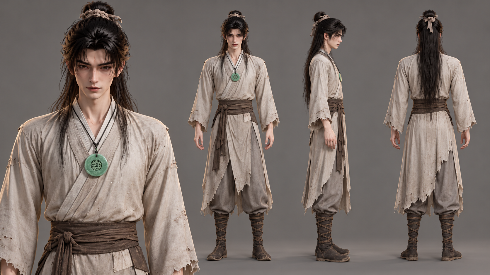
两集共用。受伤血迹、伤口愈合、金瞳、额间金印、巨型半透明自身虚影均在同一人物上变换；不生成另一套秦澈。衣袖仍保留破损。
E01-SH001,E01-SH003,E01-SH005,E01-SH007,E01-SH009,E01-SH010,E01-SH011,E01-SH012,E01-SH013,E01-SH014,E01-SH017,E01-SH019,E01-SH020,E01-SH021,E01-SH022,E01-SH023,E01-SH024,E01-SH025,E01-SH028,E01-SH029,E01-SH030,E01-SH032,E01-SH033,E01-SH034,E01-SH036,E01-SH037,E01-SH041,E01-SH043,E01-SH044,E01-SH045,E01-SH046,E01-SH047,E01-SH048,E01-SH049,E02-SH003,E02-SH004,E02-SH005,E02-SH006,E02-SH007,E02-SH008,E02-SH009,E02-SH010,E02-SH011,E02-SH012,E02-SH013,E02-SH014,E02-SH015,E02-SH016,E02-SH017,E02-SH018,E02-SH019,E02-SH020,E02-SH021,E02-SH022,E02-SH023,E02-SH024,E02-SH025,E02-SH026,E02-SH027,E02-SH029C02 · 秦昊
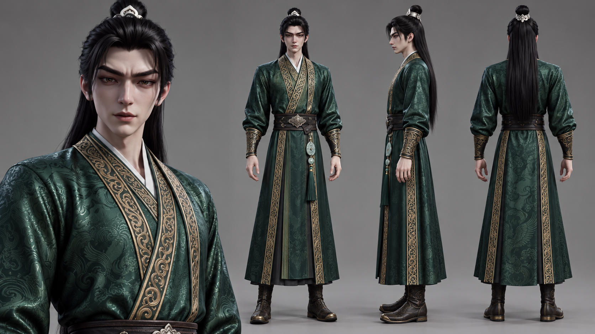
第一集秦昊；绿色金纹衣装，银色束发冠。
E01-SH001,E01-SH002,E01-SH004,E01-SH006,E01-SH007,E01-SH008,E01-SH010,E01-SH012,E01-SH015,E01-SH016,E01-SH017,E01-SH018C03 · 黑袍蒙面人
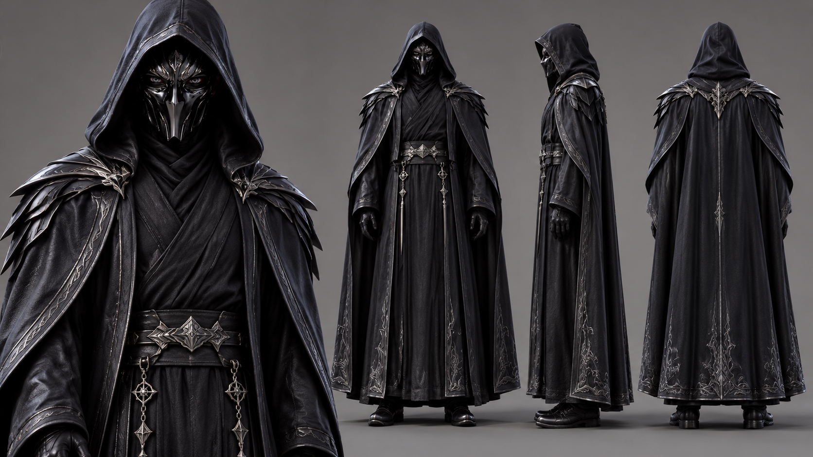
第二集黑袍蒙面人；全程面具与兜帽，不设定面具下身份。
E02-SH028,E02-SH030,E02-SH031,E02-SH032C04 · 黑衣押解守卫
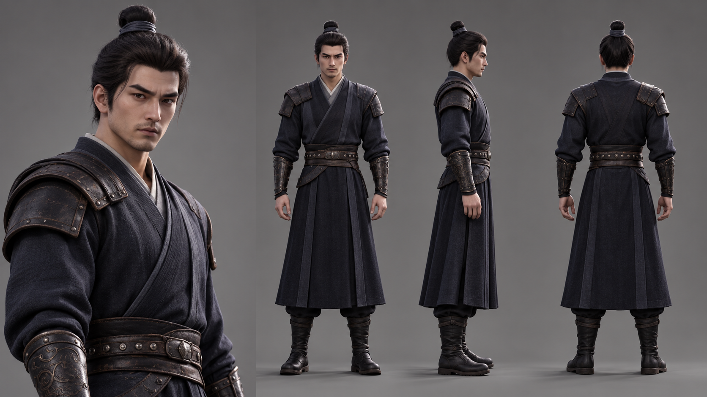
第一集两名押解守卫共用服装基础，可轻微调节脸形与体型。
E01-SH010,E01-SH011,E01-SH012C05 · 灰蓝族人
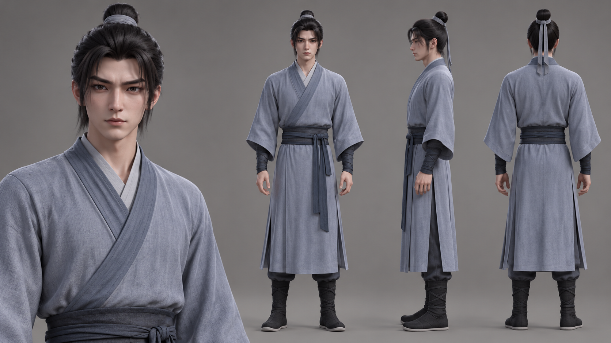
第一集测灵殿列队族人共用基础，群演通过实例变化扩展。
E01-SH001,E01-SH003,E01-SH006,E01-SH008D01 · 黑甲獠牙凶兽
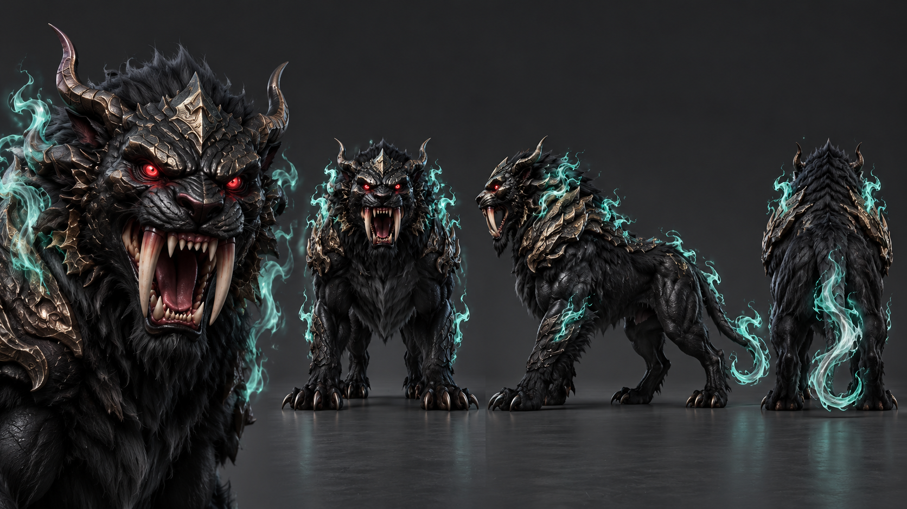
第一集黑甲獠牙凶兽，黑甲、长獠牙、双角和青焰为固定辨识点；不补写物种正式名。
E01-SH039,E01-SH040,E01-SH042,E01-SH043,E01-SH044,E01-SH045,E01-SH046,E01-SH047D02 · 赤眼狼兽
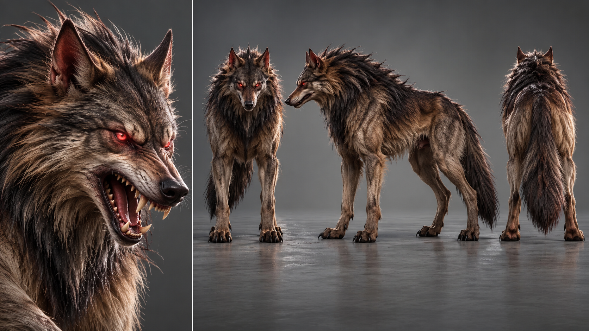
第二集赤眼狼兽，灰黑鬃毛、无金属甲；复用基础形成狼群，不与第一集凶兽混用。
E02-SH001,E02-SH002,E02-SH003,E02-SH006P01 · 传承玉佩
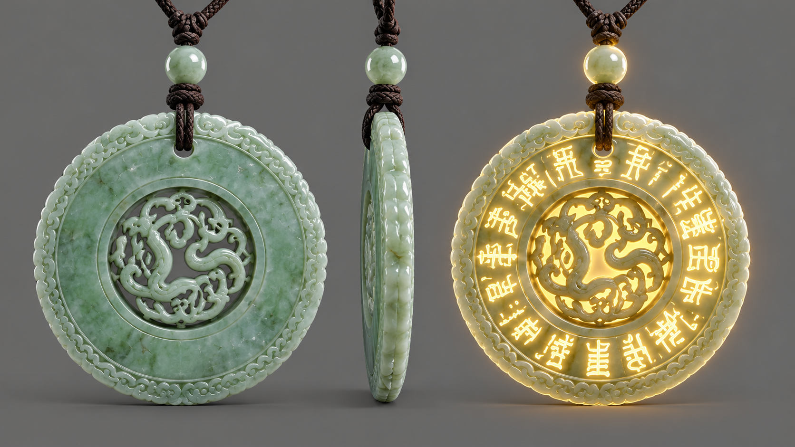
两集同一传承玉佩；左常态、右激活态，吸纳、储能、光纹逐亮属于动画变化。
E01-SH001,E01-SH003,E01-SH005,E01-SH007,E01-SH010,E01-SH012,E01-SH013,E01-SH014,E01-SH020,E01-SH021,E01-SH024,E01-SH025,E01-SH027,E01-SH028,E01-SH030,E01-SH032,E01-SH035,E01-SH036,E01-SH047,E02-SH003,E02-SH007,E02-SH008,E02-SH011,E02-SH012,E02-SH013,E02-SH014,E02-SH019,E02-SH021,E02-SH022,E02-SH023P02 · 短刃_灵剑_锁链
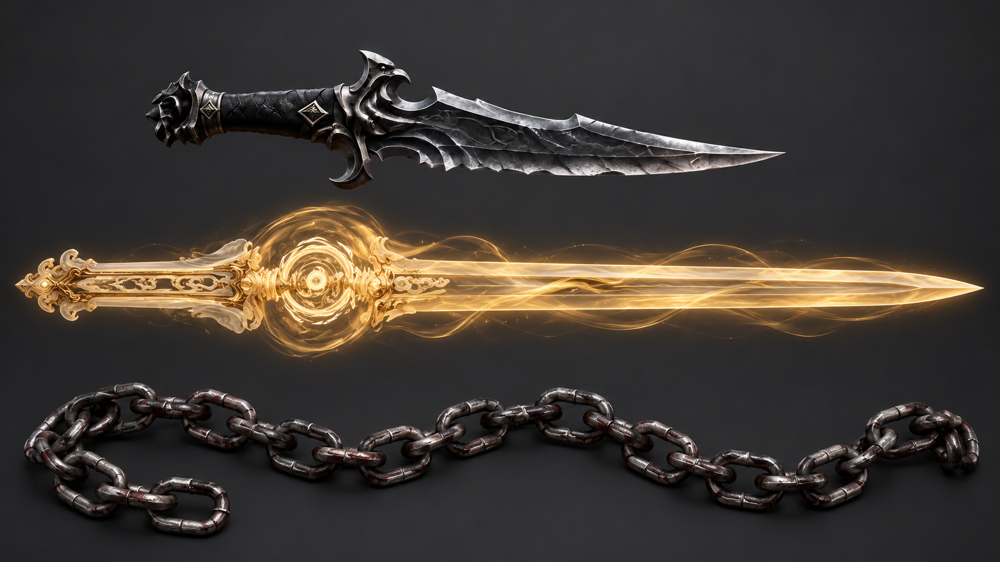
共板上方：左秦昊黑银短刃，右秦澈金色灵剑；下方为P03铁锁链。两种武器不能混为一件。
E01-SH004,E01-SH007,E01-SH045,E01-SH046,E01-SH047,E01-SH048,E02-SH004,E02-SH005,E02-SH006S01 · 测灵殿
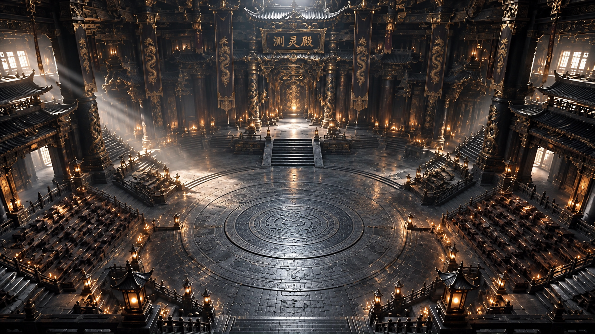
第一集测灵殿空场，族人及两位人物另行放入。
E01-SH001,E01-SH002,E01-SH003,E01-SH004,E01-SH006,E01-SH007,E01-SH008S02 · 深渊崖顶
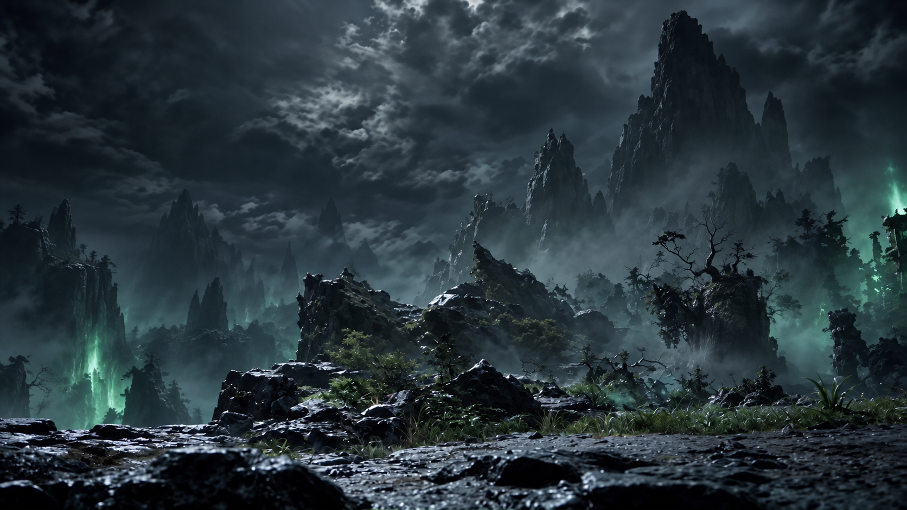
第一集深渊崖顶空场，踹落与坠落接谷底空间。
E01-SH010,E01-SH011,E01-SH012,E01-SH013,E01-SH015,E01-SH018,E01-SH019S03 · 深渊谷底
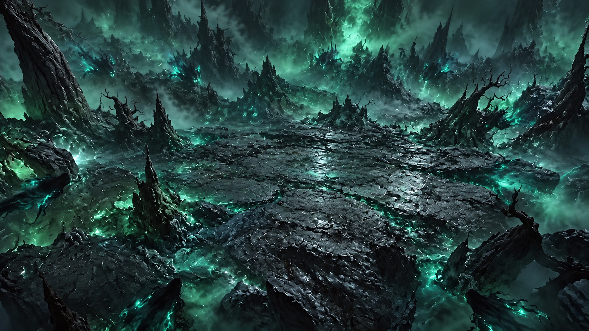
两集深渊谷底共用；平坦岩面用于倒地、战斗及盘坐，机位改变形成不同镜头。
E01-SH020,E01-SH021,E01-SH022,E01-SH023,E01-SH025,E01-SH028,E01-SH029,E01-SH030,E01-SH032,E01-SH034,E01-SH036,E01-SH037,E01-SH038,E01-SH040,E01-SH041,E01-SH042,E01-SH043,E01-SH045,E01-SH047,E01-SH048,E01-SH049,E02-SH001,E02-SH003,E02-SH005,E02-SH006,E02-SH016,E02-SH020,E02-SH021,E02-SH025,E02-SH026,E02-SH027,E02-SH028,E02-SH029,E02-SH030S04 · 星海修炼意境
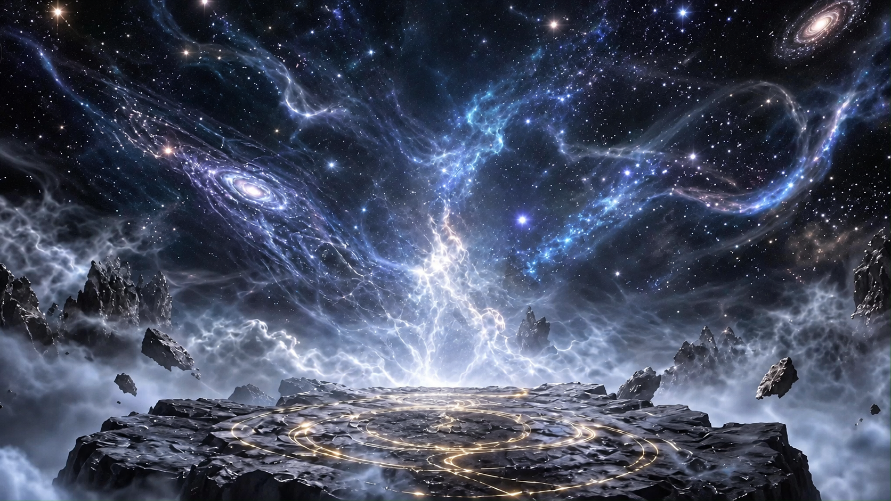
第二集星海修炼意境；人物与巨大自身虚影用C01组合，非新人物。
E02-SH011,E02-SH017,E02-SH019D03 · 怨灵
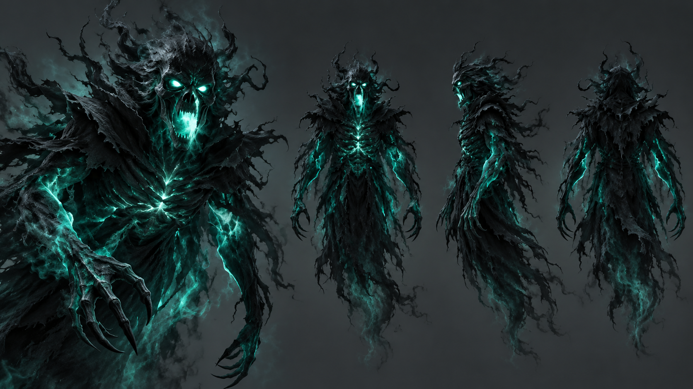
第一集漂浮怨灵，复用造型形成群体；数量以分镜参考画面为准。
E01-SH025